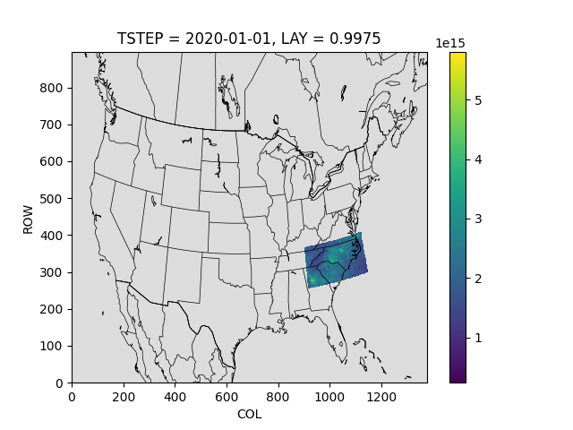

Note
Go to the end to download the full example code
Oversample CONUS at 4k¶
Create a 4km gridded product on a Continental US grid, but only download data over NC.
2020-01-01 00:00:00
2020-01-02 00:00:00
2020-01-03 00:00:00
2020-01-04 00:00:00
2020-01-05 00:00:00
2020-01-06 00:00:00
2020-01-07 00:00:00
2020-01-08 00:00:00
2020-01-09 00:00:00
2020-01-10 00:00:00
did not find a match in any of xarray's currently installed IO backends ['netcdf4', 'scipy']. Consider explicitly selecting one of the installed engines via the ``engine`` parameter, or installing additional IO dependencies, see:
https://docs.xarray.dev/en/stable/getting-started-guide/installing.html
https://docs.xarray.dev/en/stable/user-guide/io.html
2020-01-11 00:00:00
2020-01-12 00:00:00
2020-01-13 00:00:00
2020-01-14 00:00:00
2020-01-15 00:00:00
/opt/hostedtoolcache/Python/3.12.12/x64/lib/python3.12/site-packages/pycno/__init__.py:538: UserWarning: Downloading: https://www.giss.nasa.gov/tools/panoply/overlays/MWDB_Coasts_NA_3.cnob to /home/runner/.pycno/MWDB_Coasts_NA_3.cnob
warnings.warn('Downloading: ' + url + ' to ' + str(datapatho))
import matplotlib.pyplot as plt
import pyrsig
import pandas as pd
import xarray as xr
import pycno
import os
# Create a working directory
gdnam = '4US1'
bdate = '2020-01-01'
edate = '2020-01-15'
wdir = f'{gdnam}/{bdate[:4]}'
os.makedirs(gdnam, exist_ok=True)
rsigapi = pyrsig.RsigApi(
bdate=bdate, bbox=(-85, 33, -75, 37),
encoding={"zlib": True, "complevel": 1, "_FillValue": -9.999e36},
workdir=wdir, grid_kw=gdnam
)
# Update to download daily averages instead of hourly
rsigapi.grid_kw['REGRID_AGGREGATE'] = 'daily'
# Loop over days
dss = []
for bdate in pd.date_range(bdate, edate):
print(bdate)
try:
ds = rsigapi.to_ioapi(key='tropomi.offl.no2.nitrogendioxide_tropospheric_column', bdate=bdate)
dss.append(ds)
except Exception as e:
print(e)
# Create a simple long-term average
outds = dss[0][['DAILY_NO2', 'COUNT']].isel(TSTEP=0, LAY=0)
outds['DAILY_NO2'] = outds['DAILY_NO2'].fillna(0) * outds['COUNT']
for ds in dss[1:]:
ds = ds.isel(TSTEP=0, LAY=0)
outds['DAILY_NO2'] += ds['DAILY_NO2'].fillna(0) * ds['COUNT']
outds['COUNT'] += ds['COUNT']
Z = outds['DAILY_NO2'] = (outds['DAILY_NO2'] / outds['COUNT'])
# Make a plot with a medium grey background and state boundaries
qm = Z.plot()
qm.axes.set(facecolor='gainsboro')
pycno.cno(dss[0].attrs['crs_proj4']).drawstates(ax=qm.axes)
# Show the figure
plt.show()
# Or save the figure
# qm.figure.savefig('conus4k.png')
Total running time of the script: ( 0 minutes 40.685 seconds)